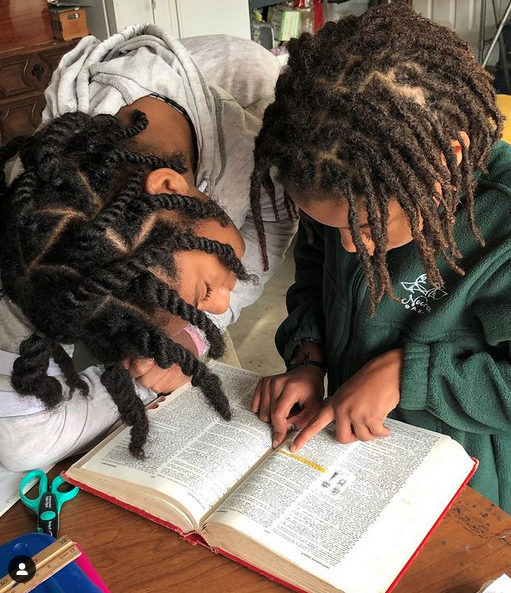
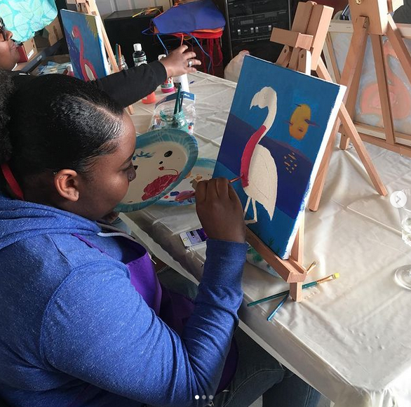
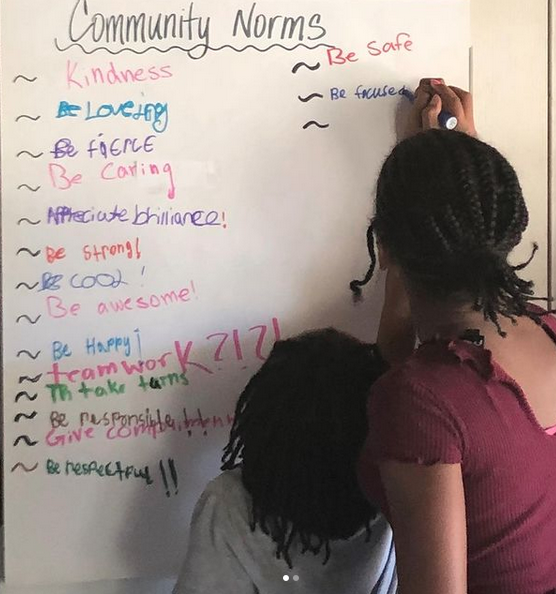
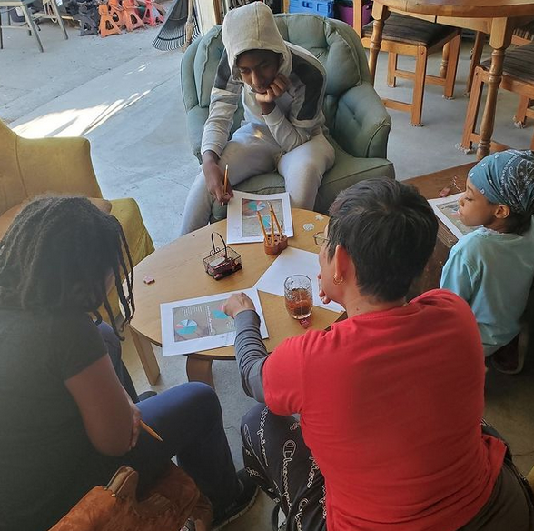

For most unschooled kids the process of reading is gradual. They build up their own sight words and morphemes. ... At home kids can learn in any way that appeals to them. They can listen, do, watch, ask questions.

Painting can help your children communicate their emotions or feelings. Through the use of different colors, they can express themselves without the use of words. Painting allows children an educational opportunity that is also fun and exciting. Painting can help children learn sizes, shapes, patterns and designs.

Volunteer, give compliments, donate to charity, hold the door for someone; there are so many ways to be an example of kindness.

Wild math looks different than domesticated math. It looks more like conversations, using numbers to figure out something the child wants to know, video games, allowance, weighing things in the grocery store, finding the best deal among several choices—that is not as a lesson but what you would normally do—board games, figuring out "how long until?" when she asks, budgets, doing a rough estimation of the items in the grocery cart to see if you have enough money, baseball statistics, crafts, origami, wrapping presents.

Small group learning is an educational approach that focuses on individuals learning in small groups and is distinguished from learning climate and organizational learning. It is also described as a team-based approach to learning where students work together towards shared learning objectives.